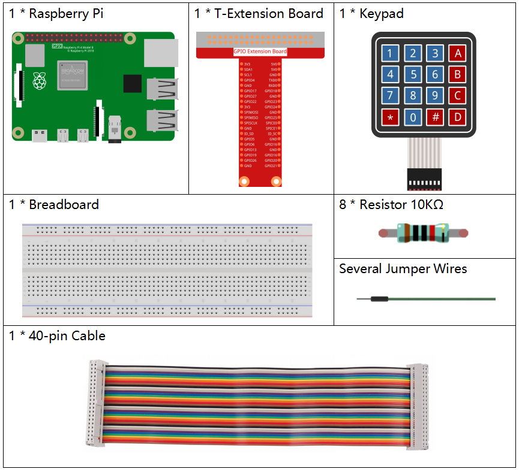

Nota
¡Hola! Bienvenido a la Comunidad de Entusiastas de SunFounder para Raspberry Pi, Arduino y ESP32 en Facebook. Sumérgete en el fascinante mundo de Raspberry Pi, Arduino y ESP32 junto a otros entusiastas.
¿Por qué unirte?
Soporte Experto: Resuelve problemas postventa y desafíos técnicos con la ayuda de nuestra comunidad y equipo.
Aprende y Comparte: Intercambia consejos y tutoriales para mejorar tus habilidades.
Avances Exclusivos: Obtén acceso anticipado a nuevos anuncios de productos y adelantos exclusivos.
Descuentos Especiales: Disfruta de descuentos exclusivos en nuestros productos más recientes.
Promociones Festivas y Sorteos: Participa en sorteos y promociones especiales de temporada.
üëâ ¬øListo para explorar y crear con nosotros? Haz clic en [Aqu√≠] y únete hoy mismo.
2.1.5 Teclado Matricial
Introducción
Un teclado matricial es un arreglo rectangular de botones. En este proyecto, lo utilizaremos para ingresar caracteres.
Componentes
Diagrama del Circuito


Procedimientos Experimentales
Paso 1: Construye el circuito.

Paso 2: Abre el archivo de código.
cd ~/davinci-kit-for-raspberry-pi/nodejs/
Paso 3: Ejecuta el código.
sudo node keypad.js
Tras ejecutar el código, los valores de las teclas presionadas en el teclado matricial (Valor de la tecla) se mostrarán en pantalla.
Código
const Gpio = require('pigpio').Gpio;
var rowsPins = [18,23,24,25];
var colsPins = [10,6,27,17];
var keys = ["1","2","3","A",
"4","5","6","B",
"7","8","9","C",
"*","0","#","D"];
for(let i=0;i<rowsPins.length;i++){
rowsPins[i] = new Gpio(rowsPins[i],{mode: Gpio.OUTPUT})
}
for(let i=0;i<colsPins.length;i++){
colsPins[i] = new Gpio(colsPins[i],{
mode: Gpio.INPUT,
pullUpDown: Gpio.PUD_DOWN,
edge: Gpio.RISING_EDGE
})
}
var last_key_pressed = 0;
var col=-1;
for(let i=0;i<colsPins.length;i++){
colsPins[i].on('interrupt',()=>{
col=i;
pressed_keys=keys[row*colsPins.length+col];
if(last_key_pressed!=pressed_keys){
console.log(`${pressed_keys}`);
}
last_key_pressed = pressed_keys;
});
}
var row=-1;
setInterval(() => {
row=(row+1)%rowsPins.length;
for(let i=0;i<rowsPins.length;i++){
rowsPins[i].digitalWrite(0);
}
rowsPins[row].digitalWrite(1);
}, 10);
Explicación del Código
const Gpio = require('pigpio').Gpio;
var rowsPins = [18,23,24,25];
var colsPins = [10,6,27,17];
var keys = ["1","2","3","A",
"4","5","6","B",
"7","8","9","C",
"*","0","#","D"];
for(let i=0;i<rowsPins.length;i++){
rowsPins[i] = new Gpio(rowsPins[i],{mode: Gpio.OUTPUT})
}
for(let i=0;i<colsPins.length;i++){
colsPins[i] = new Gpio(colsPins[i],{
mode: Gpio.INPUT,
pullUpDown: Gpio.PUD_DOWN,
edge: Gpio.RISING_EDGE
})
}
En el teclado matricial, se declaran dos conjuntos de pines y una matriz.
Cuatro de los pines representan las filas del teclado, y se configuran en modo OUTPUT. Los otros cuatro pines corresponden a las columnas del teclado, configurados en modo INPUT y con interrupción en el flanco de subida.
El microcontrolador detecta el valor de la tecla presionada de la siguiente forma: Los pines de las filas suministran un nivel alto de manera secuencial; si se presiona un botón, el pin de la columna correspondiente recibirá este nivel alto, disparando la interrupción.
Por ejemplo, si presionas la tecla 3, al aplicar nivel alto en la primera fila y leer la tercera columna, se activará la interrupción en el pin correspondiente, indicando que la tecla 3 ha sido presionada.

var row=-1;
setInterval(() => {
row=(row+1)%rowsPins.length;
for(let i=0;i<rowsPins.length;i++){
rowsPins[i].digitalWrite(0);
}
rowsPins[row].digitalWrite(1);
}, 10);
Los cuatro pines de las filas reciben periódicamente un nivel alto. La variable row indica la fila activa en ese momento.
var col=-1;
for(let i=0;i<colsPins.length;i++){
colsPins[i].on('interrupt',()=>{
col=i;
// pressed_keys=keys[row*colsPins.length+col];
// if(last_key_pressed!=pressed_keys){
// console.log(`${pressed_keys}`);
// }
// last_key_pressed = pressed_keys;
});
}
Se establecen funciones de interrupción para las cuatro columnas. La variable col ubica las columnas que disparan el evento de interrupción.
pressed_keys=keys[row*colsPins.length+col];
if(last_key_pressed!=pressed_keys){
console.log(`${pressed_keys}`);
}
last_key_pressed = pressed_keys;
En la función de interrupción, se obtiene el valor de la tecla desde la matriz keys usando row y col.
Cada vez que se obtiene un nuevo valor de tecla, este se imprime en pantalla.